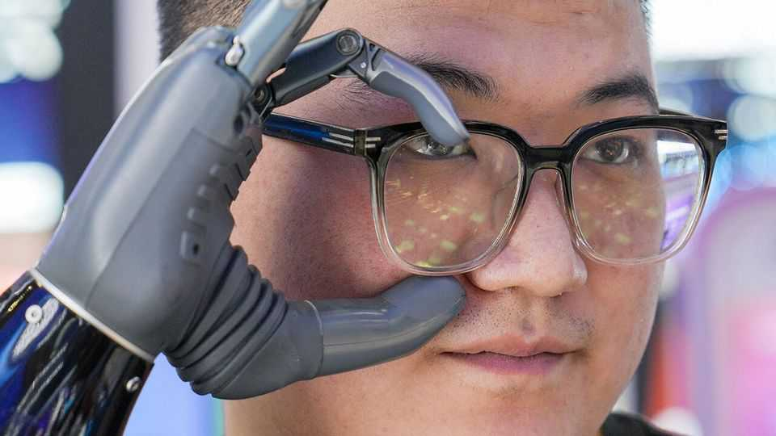
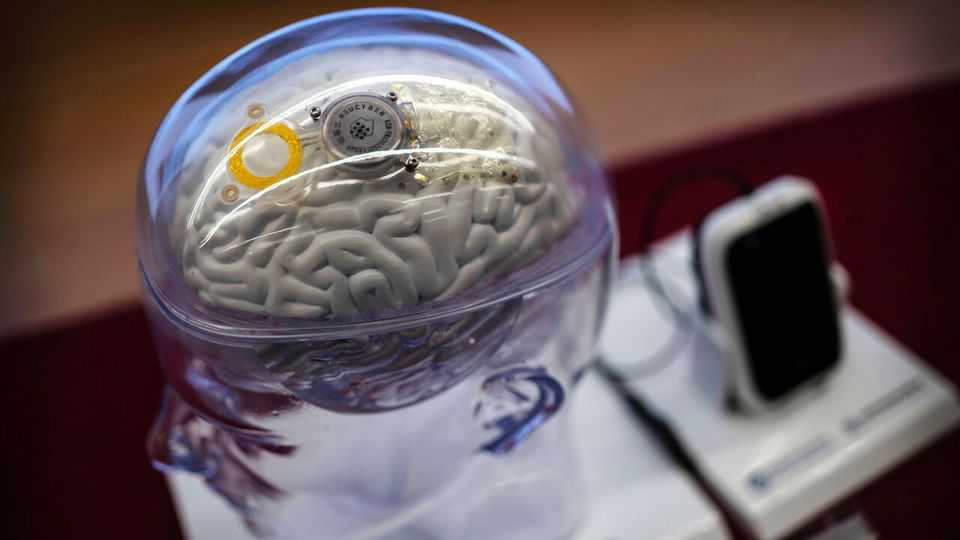

China wants to get inside your head
Brain-computer interfaces are the latest battleground in its tech rivalry with America

Oct 8th 2026
The exhibition hall at BrainCo, a “neuro-tech” startup based in the city of Hangzhou, showcases just how much its wearable devices are capable of. At one exhibit an amputee plays the piano before easily removing a bionic arm that can be attached without surgery. Elsewhere another amputee with an artificial leg paces back and forth, challenging onlookers to guess which limb is mechanical. BrainCo’s devices are not only for victims of serious accidents. At another station, your correspondent is asked to lie down and don a mask that pumps low-amplitude electrical micro-currents into his frontal lobe, supposedly to induce relaxation.
For the past decade “brain-computer interfaces” (BCIs)—machines that can deliver signals to and receive them from the human brain—have been closely associated with Neuralink, an American startup founded by Elon Musk in 2016. Neuralink was the first company to conduct trials of wireless brain implants that allow severely disabled people to control computers for long periods of time with only their thoughts and no additional hardware.
China, however, is eager to catch up. The central government’s latest five-year plan, released earlier this year, includes neuro-tech as one of the industries of the future that China will seek to dominate, alongside others such as quantum computing, robotics and fusion power. Already the state had been channelling resources to companies, universities and regulatory bodies in an effort to bridge the gap with America. In 2024 ethical guidelines for BCI research were put in place by the ministry for science and technology. In 2025 standard national fees and billing codes were introduced in hospitals to make it easier for the technology to be adopted for medical purposes. This autumn the first class of undergraduates majoring in BCI technology will commence classes at Tianjin University, the first in the world to offer such a programme.

Hundreds of Chinese startups and thousands of suppliers are now working on BCI products. Among the top Chinese challengers to Neuralink are NeuroXess, the first local company to complete clinical trials of fully wireless brain implants; StairMed, which is backed by Alibaba, a Chinese tech giant; and NeuCyber, which is backed by the state. Local governments are courting investment; officials in the inland province of Anhui have set a target of approving three clinical trials for implanted electrodes by 2028.
Less invasive versions of BCI technology have also attracted significant attention in China. Semi-invasive approaches entail implanting a device on the brain’s surface, rather than penetrating the organ. One such product, designed to aid hand-motor functions and made by Neuracle, a Shanghai-based startup, received approval in March, making it the first commercially available semi-invasive BCI implant in the world. Within two days of the approval China’s health-care bureaucracy assigned it a medical-insurance code, paving the way for sales.
Then there are non-invasive wearable devices, such as those made by BrainCo. Around 20 companies are now selling BCI wearables, including everything from sleep aids to brain-controlled gaming gadgets. These are typically worn over the head, and either read brain waves or pump in electrical currents. Industry executives talk of a large undiscovered market for wearable neuro-tech. The science is no longer the constraint on creating the devices, says Nyx He of BrainCo. Instead, she says, the focus is shifting to developing products that are useful in daily life. China’s neuro-tech bosses will be hoping that consumers keep an open mind. ■